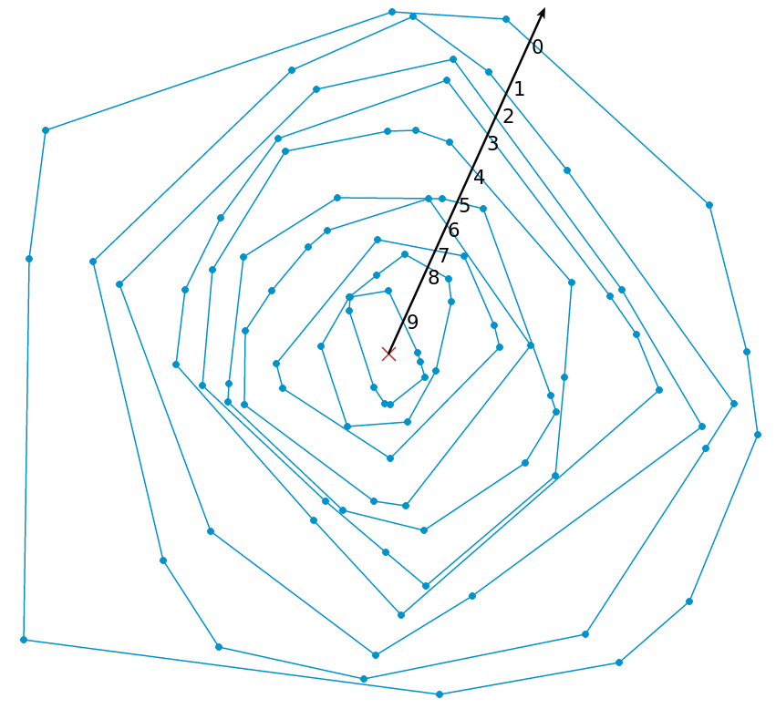

Definition: The convex hull peeling depth of a point is the number of convex hulls that must be peeled away from the point set until the point is exposed and part of the convex hull of the peeled point set. The center of a point set is then defined as the final convex set remaining. If the convex set forms a convex hull, the center can be interpreted as the centroid of the hull.
Yes, the depth mesasure is affine invariant, maximal at the center, monotone decreasing. and vanishes at infinity. This can be seen in the image below, labeling the depth values of each of the convex hulls given a ray from the center. 